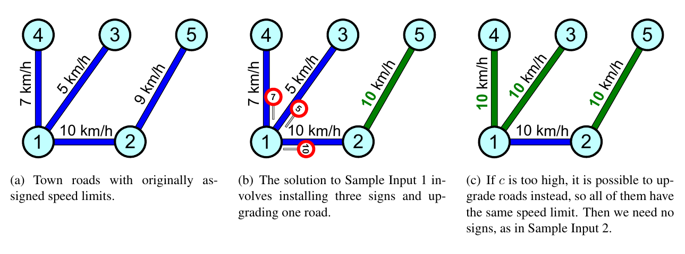

ICPC World Finals 2020 · Problem B
By the year 3031, the ICPC has become so popular that a whole new town has to be built to house all the World Finals teams. The town is beautifully designed, complete with a road network. Unfortunately, when preparing the budget, the town planners forgot to take into account the cost of speed-limit signs. They have asked you to help them determine the minimum additional funds they will need.
The ICPC road network consists of roads, each connecting two intersections. Each road is two-way and has already been assigned a speed limit, valid for both directions. To save money, the minimum possible number of roads was used. In other words, there is exactly one route from any intersection to any other intersection.
The speed-limit signs need to be installed in all places where the speed limit may change for any driver that follows any route. More precisely, if there exists an intersection where at least two roads meet with different speed limits, then all of the roads going from that intersection need a speed-limit sign installed at that intersection. Note that some roads might need two speed-limit signs, one at each end.
It costs c dollars to install one speed-limit sign. It is also possible to improve the safety and quality of any road so that its speed limit can be increased, which may in turn reduce the number of speed-limit signs required. It costs x dollars to increase the speed limit of one road by x km/h (in both directions). To avoid complaints, the town council does not allow decreasing any of the already-assigned speed limits.
Figure B.1 illustrates the situation given in both Sample Input 1 and Sample Input 2.

The first line of input contains two integers n and c, where n (1 ≤ n ≤ 20 000) is the number of intersections and c (1 ≤ c ≤ 105) is the cost of installing one sign. Each of the remaining n − 1 lines contains three integers u, v, and s, where u and v (1 ≤ u, v ≤ n; u ≠ v) are the intersections at the ends of a road, and s (1 ≤ s ≤ 105) is the current speed limit of that road in kilometers per hour.
Output the minimum cost to upgrade roads and install speed-limit signs such that the town plan satisfies all the rules above.
5 2 1 2 10 1 3 5 1 4 7 2 5 9
7
5 100 1 2 10 1 3 5 1 4 7 2 5 9
9